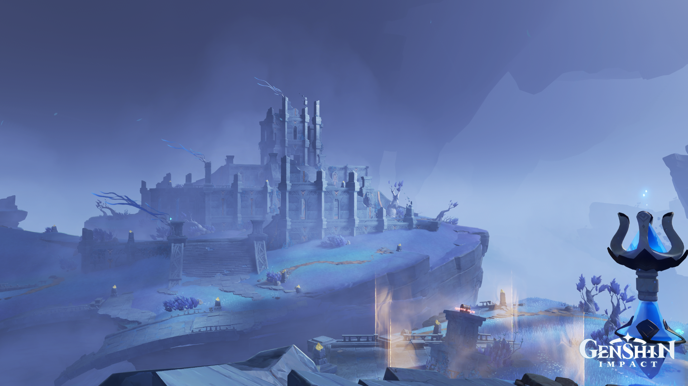
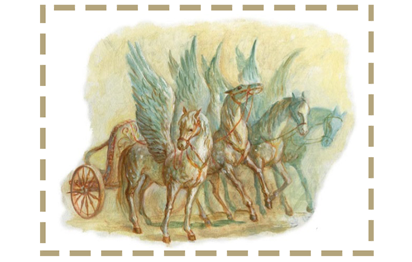
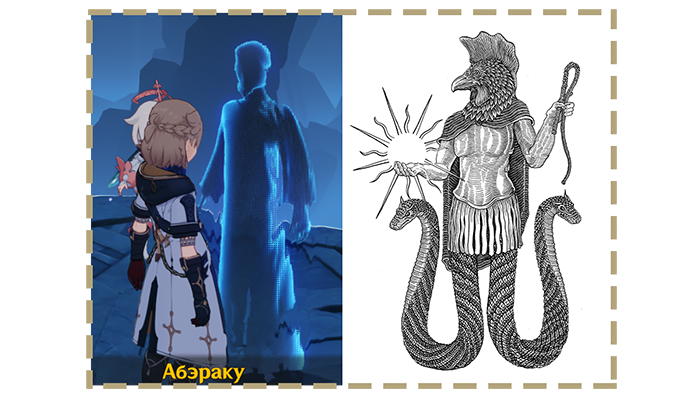
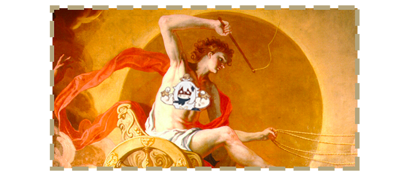
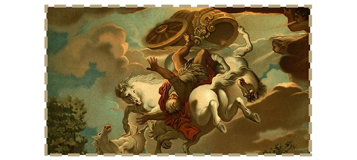

Отсылки на греческие мифы в Энканомии
Как известно, Энканомия это что-то вроде бы околояпонское: находится под Ватацуми, а это один из островов Инадзумы; имеет в основе синтоистский потусторонний мир; даже местное божество Токоё-но-омоиканэ и то взято (хотя бы частично) из синтоизма.
Но наверняка многие уже заметили кучу странных слов явно из греческого языка, да и что вообще там мало что напоминают Инадзуму: даже архитектура и та кричит, что она списывала себя с каких-то Афин.

День и ночь
В Энканомии всё завязано на теме дня (ну, там это как бы светлая ночь, но это не так важно) и ночи, причем не только геймплейно, но и сюжетно. В диалогах, названиях и вообще детальках энканомийского лего под тапком Путешественника очень часто встречаются вещи из греческой мифологии, связанные именно с переходом из светлого времени в темное и наоборот.
Небесная колесница

Одна из таких "вещей" — миф о Небесной колеснице. В игре колесницей называется, насколько я понимаю, механизм, запускающий Гелиос — искусственную звезду на вершине башни. То, что включает нам в Энканомии свет, короче говоря. Но сама идея взята из греческого мифа.
Колесниц таких, в принципе, несколько по количеству участников этого светового представления. Так, каждое утро бог солнца по имени Гелиос проезжает по небу на своей золотой колеснице, выкованной богом Гефестом, и зажигает Солнце. Пока Гелиос на колеснице движется по небосводу, Солнце проходит по своей дуге и клонится к закату, когда Гелиос доезжает до границы неба.
Ночью его сменяет богиня ночи Нюкта, проезжающая на подобной колеснице. Нюкта затмевает небо, оставляя гореть звёзды. Попутно ещё и богиня луны Селена там проскакивает на быках :D
Фосфорос и Гесперос
Все, кто заспидранил Энканомию за первые пару суток, уже успели столкнуться с ачивками, названиях которых фигурируют имена греческих богов. Среди них есть Гесперос и Фосфорос.
В мифах Древней Греции Фосфорос (он же Фосфор, Эосфорос и даже Эос) и Гесперос — это два брата. Равно как Гелиос подрабатывает переключателем Солнца, а Нюкта — ночи, два брата акробата отвечают за звёзды на небе: Фосфорос это утренняя звезда, Гесперос — вечерняя. По факту, они представляли планету Венеру, а не звезду, но так оно называется. Плюс сложно точно сказать, божества это, исполняющие такую функцию, или что-то вроде хуманизации самой звёзды (планеты) в мифическом представлении.
Мудрец Абэраку

Раз уж тема коснулась дел солнечных, стоит сказать и о самом главном в Энканомии - искусственной звезде под название Гелиос и её создателе. В игре мудрец одновременно носит три имени: Абэ, Абэраку и Абракс. Лично я не знаю ни одного Абракса, зато знаю, что есть Абраксас — божество из гностицизма, на котором основана добрая половина геншина.
Абраксас связан с мирозданием и считается посланником Солнца, а то и вовсе самим Солнцем. Он тот, кто это самое Солнце и его свет подарил людям. Абраксас весьма властное божество, которое в принципе и должно быть таким, потому что своей фигурой олицетворяет тотальный контроль над всем существующим.
Интересно то, что он — посланник Солнца, равно как и мудрец Абэраку, создавший для людей Энканомии искусственное Солнце. Пока у жителей не стал заходить ум за разум и они не обожествили уже это самое Солнце, они практически поклонялись Абэраку, как его создателю, что его снова связывает с Абраксом.
Гелиос и Гипериону
На самом деле сам по себе Гелиос тоже стоит упоминания. Мудрец Абэраку назвал его именем свою лампочку Абэльича. Но ещё он пару раз называл Гелиос Гиперионом, другим персонажем греческой мифологии. Так что предлагаю разобраться вообще с этим богом и его батькой, потому что название для звёзды однозначно выбрано не просто так.
Гиперион в древнегреческой мифологии был титаном, который по итогам Титаномахии (Войны Богов и Титанов) был свержен в царство мёртвых — Тартар. Он был сыном богини земли Геи и бога неба Урана, которые породили множество различных богов и существ по типу титанов, циклопов и гекатонхейров (великаны с 50 головами и 100 руками). Его имя означает либо "очень высокий", либо "идущий наверху" или "тот, кто идет выше".
Под властью Гипериона находился восток, его называли господином востока. Гиперион участвовал в Титаномахии на стороне титанов. Был свержен в Тартар. В незаконченной поэме Китса "Гиперион" молодой солнечный олимпиец Аполлон поражает Гипериона, последнего из восставших титанов. По Гесиоду, титан, солнечный бог был отцом Зари, Солнца и Луны (Эос, Гелиоса и Селены).
В данном случае я предлагаю считать Гелиоса и Гипериона разными божествами и не отождествлять их, ибо в некоторых философских трактатах (особенно у Гомера) Гелиос и Гиперион — равнозначны.
Теперь мы плавно перейдём к Гелиосу. Любопытно, что, согласно труду Цицерона "О природе богов", упоминается аж пять Гелиосов: сын Зевса, внук Эфира; сын Гипериона; сын Гефеста, внук Нила, из Гелиополя; сын нимфы Аканфо на Родосе, предок родосских героев; отец Ээта и Кирки, из Колхиды. Я предлагаю придерживаться именно второго Гелиоса — сына Гипериона.

Согласно античной мифологии, бог солнца Гелиос, освещая всю вселенную, мог видеть все, что происходило на ней, даже самое сокровенное, поэтому его называли всевидящим и обращались к нему, желая что-либо узнать. Так, например, он открыл Гефесту измену его жены, Афродиты. Деметре он рассказал о том, что её дочь Персефону похитил бог подземного царства Аид.
Гелиос обитает по Овидию в великолепном дворце в окружении четырех времен года, сидит на престоле из драгоценных камней. Гелиос поднимался с криком петуха, считавшегося его священной птицей, и сопровождаемый своей дочерью Эос, богиней утренней зари, садился в огненную колесницу. Ежедневно он проделывал путь от своего блистательного дворца на востоке до не менее великолепного дворца на западе. В его колесницу были впряжены четыре белоснежных огнедышащих коня – Свет, Блеск, Гром, Молния. В конце дня Гелиос распрягал их и отпускал пастись на Островах Блаженных. Затем ночью по Стесихору он переплывал по потоку Океана в золотой чаше, сделанной Гефестом, к восточному жилищу.
Однако не всегда Гелиосу удавалось соблюдать этот строгий распорядок. Однажды по приказу Зевса он три дня не покидал своего дворца и трое суток над землей не поднималось солнце. Столько длилась брачная ночь Зевса и Алкмены, в которую был зачат Геракл. В другой раз на полпути Гелиоса по небу Зевс приказал ему повернуть вспять свою колесницу, чтобы помочь Атрею взойти на трон в Микенах. Обычно Гелиоса изображали едущим в колеснице с лучами солнца над головой. В гомеровских гимнах Гелиос предстает в ослепительном сиянии, с горящими страшными глазами в золотом шлеме.
Всё бы ничего, но вскоре произошла трагедия с его сыном — Фаэтоном (блистающий). Причем любопытно, что по одной из версий его матерью была океанида Климена (помните почему Климена в квесте хотела успокоить души Сынов Солнца, Фаэтонов?)
Миф о Фаэтоне

Однажды, родственник Фаэтона, сын громовержца Зевса Эпаф, насмехался над ним, что он — не сын Гелиоса. Оскорблённый Фаэтон хотел доказать ему обратное. Он отправился к отцу и весь в слезах стал умолять его доказать перед всей вселенной, что он рождён от бога. Гелиос, тронутый горем сына, обещал сделать для него все, что только в его силах, и даже поклялся исполнить его первое желание, хотя бы самое безрассудное. Тогда Фаэтон попросил позволить ему один только день управлять золотою колесницею, на которой солнце ездит по небу. Гелиос, предвидя опасность от управления такой неопытной рукой его крылатыми конями, пришел в ужас, но, поклявшись до этого подземной рекой Стиксом, он поневоле должен был сдержать эту священную клятву.
Утром Гелиос приказал Орам (богиням времён года) запрячь своих коней и сам намазал лицо юноши волшебною мазью, чтобы предохранить его от пламени, вылетающего из конских ноздрей. Фаэтон, гордясь, что явится перед вселенной на золотой колеснице, смело взял вожжи, но кони, сразу почувствовав неумелые руки, понесли, сбиваясь с обычного пути. Испуганный Фаэтон, забыв все наставления отца, начал терять голову. Вскоре, как только Фаэтон потерял управление, Колесница приблизились к Земле, отчего та загорелась. Гея взмолилась к Зевсу, и тот сразил Фаэтона молнией, и Фаэтон рухнул в реку Эридан и погиб.